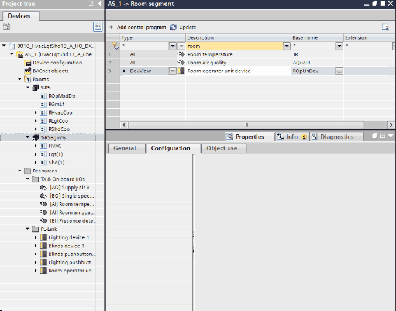

配置房间操作员单元
您可以根据您的项目要求配置房间操作员单元。

Configure room operator units
- You have added a room operator unit to your project.
- Go to the Room programming editor.
Duplicating and programming - Open the Room segment editor and select your room operator unit device.
- Expand the tree to see all the data points of the room operating unit device.
- Select the peripheral device object (PrphDev).
- In the Properties area, select the Configuration tab.
- The configuration settings of the device display.
- Make your changes according to your project requirements.
- Right-click the room operator unit device and select Show in device configuration.
- The Device view opens.
- In Properties > Device information > Customized view selection, click Layout.
- The Template view opens.
- You can directly enable or disable settings in the hardware layout of the device. Or open Properties > Display configuration to make your changes in the Display configuration.

确保外围设备的属性设置与设备配置中的属性匹配。